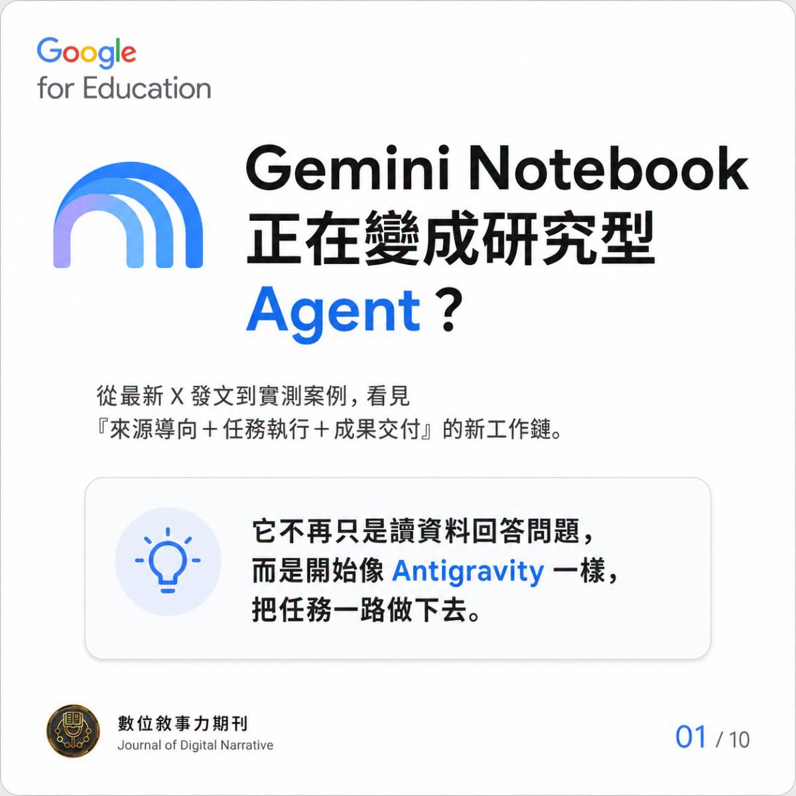
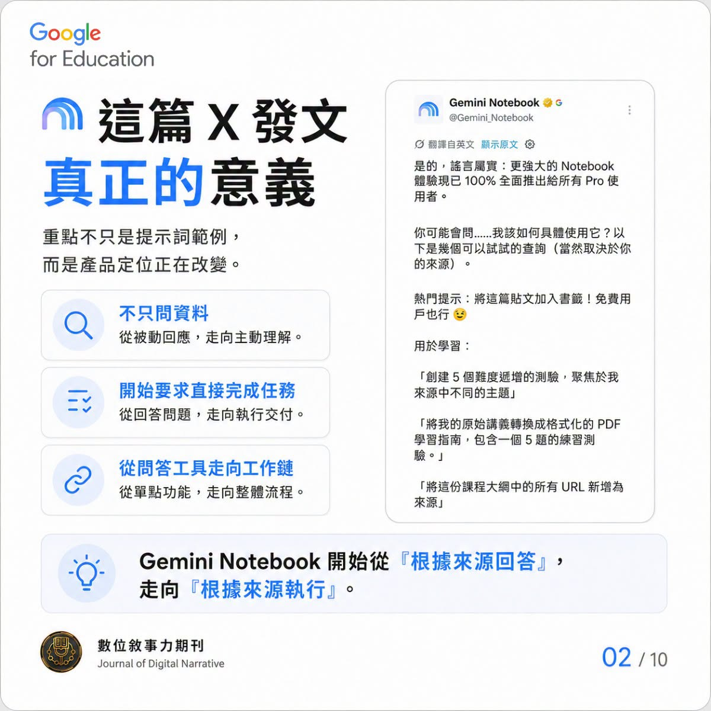
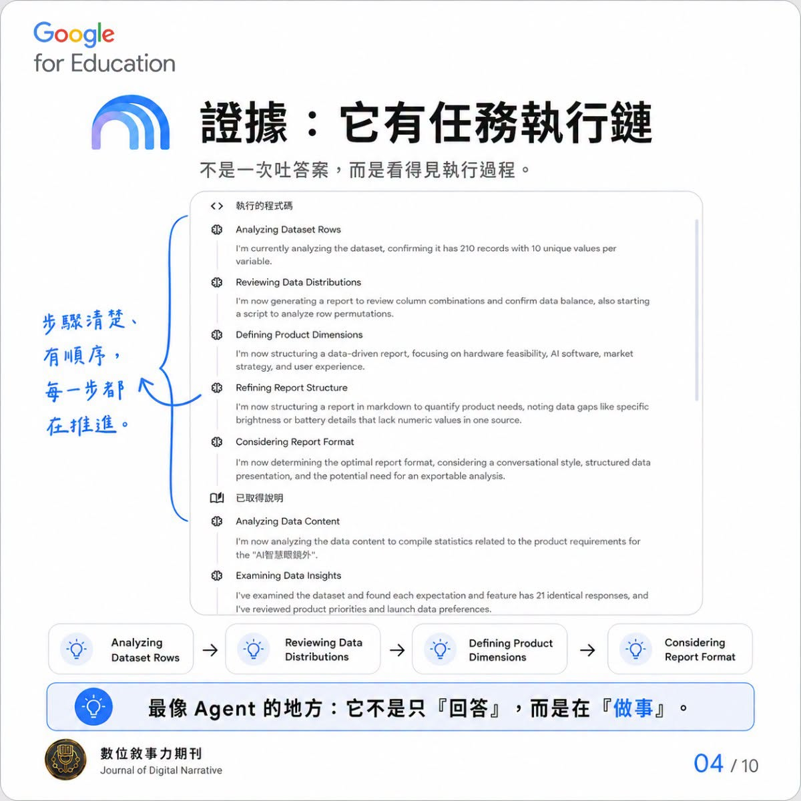
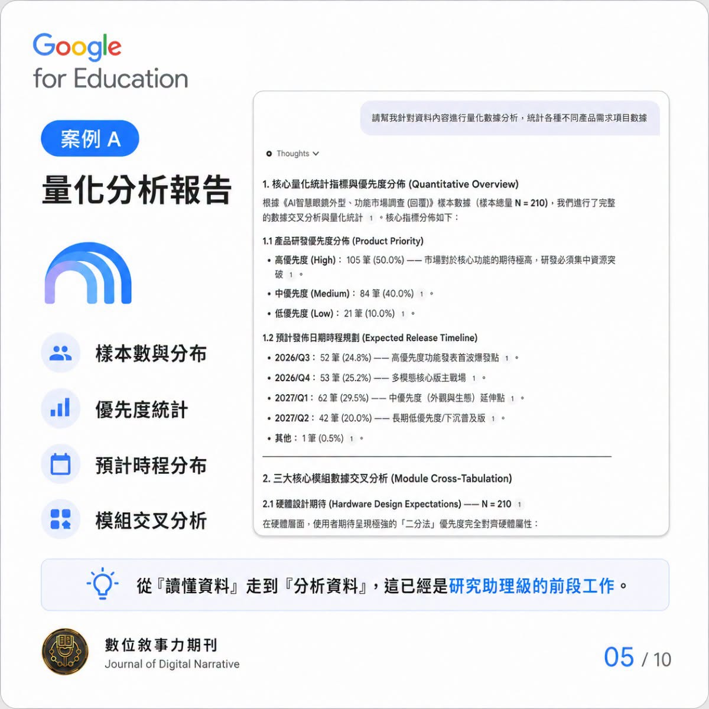

Facebook｜Gemini Notebook 默默升級？從來源問答走向任務執行與檔案交付

為什麼保存
這則 Facebook 貼文值得收錄，因為它捕捉到 Google NotebookLM / Gemini Notebook 類產品的一個重要方向：從「根據來源回答問題」往「根據來源規劃任務、執行分析、交付成果」移動。
對教育科技與 AI 工作流來說，這不是單純多幾個輸出按鈕，而是使用者心智模型的轉換：Notebook 不再只是資料夾旁邊的問答欄，而可能成為一個以來源為邊界、能協助產出教材、報告、簡報、測驗、圖像化摘要與分析結果的研究工作台。
Facebook 貼文可見內容
來源是「數位敘事力期刊（Journal of Digital Narrative）」的公開 Facebook 貼文，標題為：
> 【Gemini Notebook 默默升級？檔案交付執行】
未登入公開頁可見作者表示：看到 `#Gemini_Notebook` 官方 X 發文後進行測試，發現 Gemini Notebook 環境中似乎已能執行簡單 Python，並可依使用者提供的 Context 生成可交付的檔案資料。作者把它和多數老師近期使用 Google Antigravity 的案例相比，並列出四類測試：
| 貼文測試 | 可見描述 | 可靠解讀 |
|---|---|---|
| 案例 A | 資料視覺化，可將各類教育統計資料分析 | Notebook 開始被用於量化分析與圖表輸出，而不只做質性摘要。 |
| 案例 B | 能直接生成格式文件檔案（.docx、.pptx、.xlsx） | 這是社群實測主張；需以實際帳號、方案與介面 rollout 為準。 |
| 案例 C | 一句指令調度多項、不同的工作室功能 | 對應 Notebook 的 Studio / 生成式輸出工作流，而非單一聊天回答。 |
| 案例 D | 寫出簡單的 GAS 程式文件也沒問題 | 屬貼文作者測試觀察；產出的程式仍需人工審查與安全檢查。 |
可見互動數：88 個心情、8 則留言、53 次分享。留言中有人詢問「可以直接生成 word?」，作者回覆「沒有問題」；另有留言提到要求 NotebookLM 直接回存雲端時，系統以生成 txt 檔替代，顯示「直接寫回雲端」這類動作仍有邊界。
圖卡重點
Facebook 未登入頁面可取得前 5 張高解析圖卡；圖卡區顯示「+6」，其餘圖卡未能可靠取得高解析原圖，因此本文只保存可見內容，不補腦第 6–10 張。

| 圖卡 | 主要訊息 |
|---|---|
| 01/10 | Gemini Notebook 正在變成研究型 Agent；新工作鏈是「來源導向＋任務執行＋成果交付」。 |
| 02/10 | 官方 X 發文的意義不只是提示詞範例，而是產品定位轉變：從「根據來源回答」走向「根據來源執行」。 |
| 03/10 | 與 Antigravity 相像的不是名稱，而是能力結構：來源導向、任務規劃、工具執行、檔案交付。 |
| 04/10 | 圖卡顯示可見任務執行鏈，例如 Analyzing、Reviewing Data Distributions、Defining Product Dimensions、Considering Report Format。 |
| 05/10 | 案例 A 展示量化分析報告：包含樣本分佈、優先度統計、預計時程分布與交叉分析。 |


官方查核：Google 已把 Notebook 定位成來源導向研究助理
Google 說明中心目前以「Gemini Notebook」命名說明這項產品，並把它描述為 AI-powered research assistant，讓使用者 refined and organize ideas，並能上傳或探索來源。官方文件可查核到以下重點：
- Gemini Notebook 可上傳 PDF、網站、YouTube 影片、音訊檔、Google Docs、Google Slides，或探索新來源。
- 使用者可與 notebook 對話，取得 grounded information based on your sources，並帶有來源引用。
- 官方已有獨立說明頁列出 Studio / 生成式輸出：Audio Overview、Video Overview、Mind Maps、Flashcards、Quizzes、Infographic、Slide Deck。
- Slide Deck 官方頁說明可把來源轉成 polished presentation，並可在 Gemini Notebook 中展示或分享為 PDF。
- Infographic 官方頁說明可把來源中的複雜資訊轉成單張視覺摘要，用來理解重點、視覺化資料或概念關係。
- 隱私與條款頁提醒：若使用者送出 thumbs up / thumbs down feedback，Google 會收集相關內容，例如 prompts、customizations、sources、uploads 與 outputs，包括 chats、audio overviews、video overviews、reports、mind maps、source discovery 等。
因此，社群貼文主張的「從來源問答走向任務與輸出」大方向，與 Google 官方列出的 Notebook 生成式輸出功能一致；但「能執行 Python」「直接產出 .docx/.pptx/.xlsx」「寫 GAS 文件」等細節，目前本文只把它視為該貼文作者的可見實測觀察，不等同於 Google 對所有帳號、地區、方案的功能承諾。
對課程與研究工作流的意義
若把 Gemini Notebook 當作課程研究工作台，可以把任務拆成三層：
- 來源層：先放入課綱、訪談稿、教材、研究文章、統計資料與 YouTube 內容，建立可追溯的 context。
- 分析層：讓 Notebook 先做摘要、主題分群、樣本分佈、交叉表、重點比較，再回到原始來源人工核對。
- 交付層：輸出成測驗、簡報、資訊圖表、學習指南、報告草稿或課堂活動素材。
較安全的 prompt 寫法，是明確要求「先列出資料來源與限制，再產出格式」，例如：
```text
請只根據這個 Notebook 中的來源，幫我建立一份課程分析報告。
任務：
- 先列出你使用到的來源與每個來源的限制。
- 將資料分成「質性觀察」與「量化指標」。
- 若資料不足以做統計，請明確標註不要生成假數據。
- 最後輸出：
- 5 點摘要
- 一張課程設計建議表
- 10 題學習檢核題
- 一份可轉成簡報的段落大綱
限制：
- 所有內容使用繁體中文。
- 每個重要結論都要附來源依據。
- 不要聲稱你已驗證來源以外的事實。
```
風險與限制
- Facebook 圖卡屬社群解讀與實測，本文不把「研究型 Agent」視為官方產品名稱或功能保證。
- 未登入公開頁僅可靠取得前 5 張高解析圖卡；第 6–10 張沒有完整保存，後續若有原圖可再補。
- 任何自動產出的 `.docx`、`.pptx`、`.xlsx`、GAS 或 Python 結果，都要人工檢查格式、公式、程式安全、資料來源與隱私風險。
- 教育統計與質性分析不可只看 AI 報告；需回到原始資料核對抽樣、欄位定義、缺漏值與偏誤。
- 若資料含學生、受訪者、報名名單或機構內部資料，不應直接上傳到未確認合規的服務；至少要先去識別化並確認組織政策。
- Google Notebook 功能會受帳號、地區、年齡、方案與 rollout 影響；文章中的操作可能與讀者當前介面不同。
相關條目
- [Facebook｜Gemini Canvas 7 個實用場景：從文件編輯、Web App 到學習材料](2026-08-04-facebook-chris-ke-gemini-canvas-use-cases.html)
- [Facebook｜大學塾三個 Gemini Gem：把 Google Antigravity 任務指令拆成 Skill 產生器、技能資料庫與任務解構器](2026-08-03-facebook-biglearner-antigravity-three-gems-task-instructions.html)
來源
- Facebook 分享連結：`https://www.facebook.com/share/p/1BnHohQfNi/?mibextid=wwXIfr`
- Facebook canonical：`https://www.facebook.com/story.php?story_fbid=122212573076587238&id=61567617167509`
- Google 說明中心：Learn about Gemini Notebook：`https://support.google.com/gemininotebook/answer/16164461?hl=en`
- Google 說明中心：Add or discover new sources for your notebook：`https://support.google.com/gemininotebook/answer/16215270?hl=en`
- Google 說明中心：Generate Flashcards or Quizzes：`https://support.google.com/gemininotebook/answer/16958963?hl=en`
- Google 說明中心：Generate an Infographic：`https://support.google.com/gemininotebook/answer/16758265?hl=en`
- Google 說明中心：Generate a Slide Deck：`https://support.google.com/gemininotebook/answer/16757456?hl=en`
- Google 說明中心：Privacy and Terms of Use：`https://support.google.com/gemininotebook/answer/17004255?hl=en`